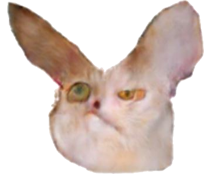

PrivateBits
Your ID:
Refresh the page to generate a new ID.
Enter your friend's ID and press connect:
Pressing connect will open your chat to incoming connections.
When a successful connection is made, incoming connections will be disabled again.
